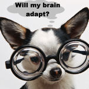

Миф индустрии LASIK гласит, что "мозг адаптируется". На самом деле они имеют в виду, что пациенты с незначительными нарушениями зрения забывать насколько острым и ясным было их зрение до LASIK. Вот почему хирургам LASIK нравится работать с обоими глазами пациента одновременно. Индустрия LASIK делает ставку на эту "нейронную адаптацию", поощряя пациентов к " дай ему время "Нейронная адаптация" не означает, что пациенты видят в очках так же хорошо, как до LASIK, и это не делает их более безопасными на дорогах в ночное время.
Пациенты с серьезными нарушениями зрения (как правило, пациенты с большими зрачками) не могут "адаптироваться". Абсурдно предполагать, что пациенты могут "адаптироваться" к тому, что они не могут видеть. С их мозгом все в порядке... проблема в их глазах! Если изображение, которое видит пациент, не в фокусе, значит, оно не в фокусе, и точка.
Маргарет Макдональд, доктор медицинских наук, сказала, что, хотя пациенты могут быть полностью удалены, некоторые из них просто никогда не будут счастливы. "У некоторых пациентов зрение составляет 20/20, а разум - 20/400", - сказала доктор Макдональд. Она предположила, что хирургам необходимо внимательно оценивать своих пациентов, чтобы понять, кто из них будет хорошим кандидатом не только в физическом, но и в психологическом плане. Источник: Майкл Дж. Уолш, американское ИЗДАНИЕ "НОВОСТИ ГЛАЗНОЙ ХИРУРГИИ". Некоторые предвидят ограничения в технологии волнового фронта 1 августа 2002 года.
Джеймс Дж. Зальц, доктор медицинских наук:"...Я слышал, что сторонники двусторонней лазерной коррекции зрения серьезно заявляют, что это одна из причин, по которой нужно делать операцию на двух глазах одновременно, чтобы пациент не мог "сравнить глаз, подвергнутый лазерной коррекции, с глазом, на котором установлены контактные линзы!";
Источник: www.drsalz.com/bilateral_lasik.htm
"Пациенты также могут адаптироваться к визуальным симптомам в послеоперационном периоде, что приводит к воспринятый количество сообщений о проблемах уменьшилось. Поскольку при обследовании в течение 1 месяца между лечением первого и второго глаза была задержка, пациентам предоставляли необработанный глаз для сравнения с визуальными результатами, полученными после лечения. Это, возможно, ограничило их способность к адаптации и, возможно, способствовало тому, что они сообщали о таких проблемах...";
Источник: Офтальмология. Август 2003 г.;110 ( 8 ) : 1606-14.
Размер зрачка и качество зрения после операции LASIK.
Schallhorn и соавт
"Уменьшение жалоб на ночное зрение с течением времени частично связано с адаптацией центральной нервной системы, и эта нейронная пластичность варьируется у разных людей".;
Источник: Метод CATz с топографическим контролем в сравнении с традиционным методом LASIK для лечения близорукости с помощью NIDEK EC-5000: Двустороннее исследование зрения
Судебно-медицинская экспертиза, том 22, № 8, октябрь 2006 г.
Мансур А. Фаруки, FRCSEd; Абдул Рахман Аль-Муаммар, доктор медицинских наук, FRCSC
Джек Т. Холладей, доктор медицины:"Целью нашей рефракционной хирургии должно быть устранение или, по крайней мере, уменьшение всех оптических аберраций глаза, включая сферическую аберрацию. Однако мы должны помнить, что пациенту может потребоваться от 6 до 12 месяцев нервной адаптации, чтобы полностью оценить и продемонстрировать улучшение таких субъективных показателей, как острота зрения и контрастная чувствительность."
Источник: Катарактальная и рефракционная хирургия сегодня, ноябрь 2006 г.
Пабло Арталь, доктор философии:"Жалобы многих пациентов на нежелательные визуальные явления исчезают без какой-либо видимой причины, кроме как с течением времени... Важно отметить роль времени в нейронной адаптации. Более того, хотя очевидно, что зрительная система не может справиться с очень большим количеством аберраций кроме того, важно понимать, какое количество отклонений требуется для того, чтобы вызвать адаптацию."
Источник: Катарактальная и рефракционная хирургия сегодня, август 2007 г.
"Наконец, нейронная адаптация играет важную роль в том, как мозг справляется с HOA. Может потребоваться 1,5 года, чтобы улучшить зрительные способности, что вполне может зависеть от возраста, поскольку пожилым пациентам требуется больше времени".;
Источник: EUROTIMES, октябрь 2007 г.
Стивен Э. Уилсон, доктор медицинских наук:"Вы не можете иметь зрение 20/15, имея мозг 20/40".;
Источник: Eurotimes, апрель 2004 г. Специальная абляция волнового фронта, чего нам не хватает?
В зависимости от типа линзы и пациента нейроадаптация может наступить раньше, позже или не наступить вовсе. По словам доктора Мэлони, большинство пациентов адаптируются к мультифокальным ИОЛ в течение шести-двенадцати месяцев. Но около 10% пациентов никогда не адаптируются. "Бывают случаи, когда пациент, у которого возникают серьезные проблемы со зрением в течение шести-двенадцати месяцев после операции, говорит: "Я больше не хочу этого терпеть, я хочу снять эти линзы".;
Источник: журнал EyeNet, июль 2007 г.
"Плюсом мультифокальных ИОЛ, - сказал доктор Холладей, - является нейронная адаптация, которая происходит со временем у пациентов, которым имплантированы линзы. По его словам, к 1 году после операции мозг пациента адаптируется к новому способу получения визуальной информации, и пациенты, которые поначалу были недовольны, становятся более довольными".;..."Жизненно важно провести двустороннюю имплантацию мультифокальных линз, чтобы обеспечить нервную адаптацию, - сказал доктор Холладей.";..."Всегда устанавливайте мультифокальные линзы на оба глаза", - сказал он. "К 6-9 месяцам начнется нервная адаптация, и количество недовольных пациентов сократится до менее чем 1-2%".;
Источник: НОВОСТИ ОФТАЛЬМОХИРУРГИИ от 15.09.2005
Коррекция пресбиопии представляет собой сложную оптическую задачу.